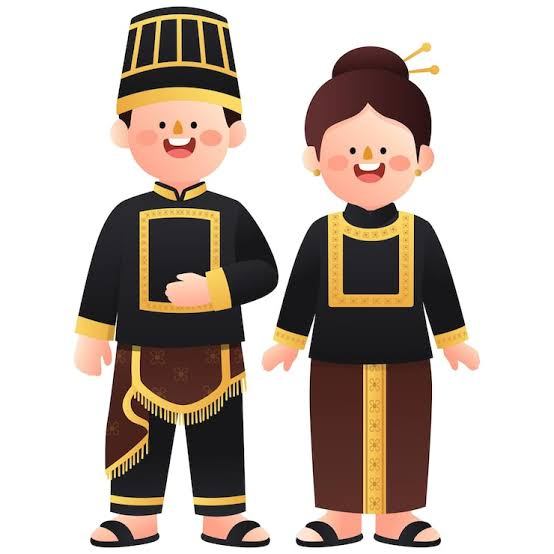
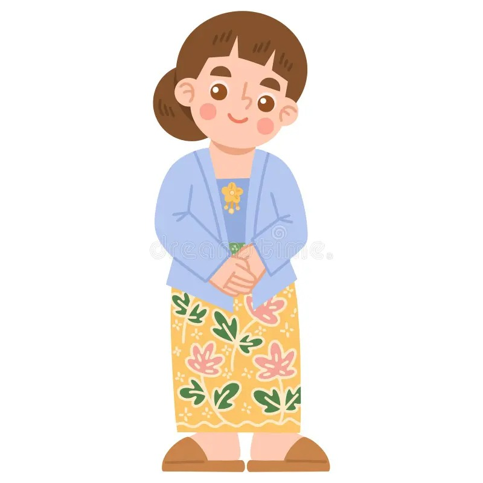
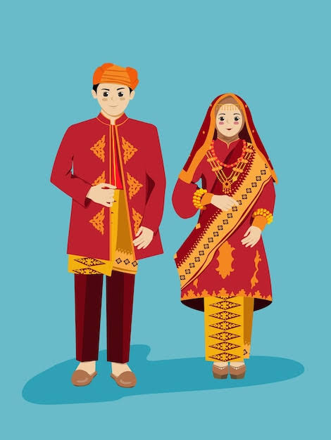
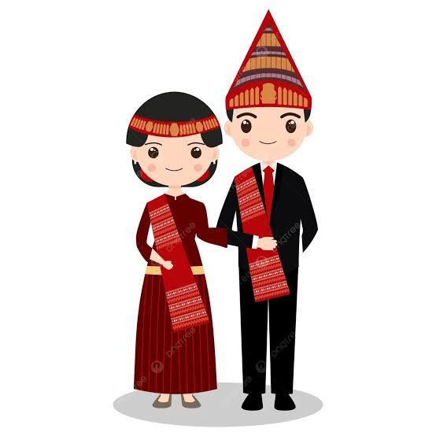
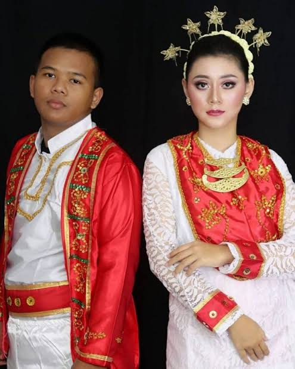
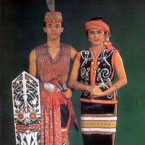
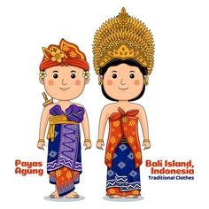
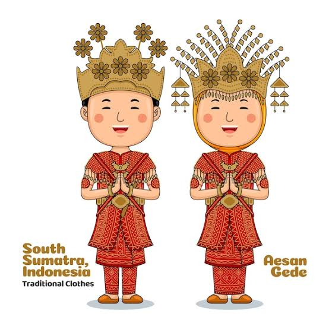
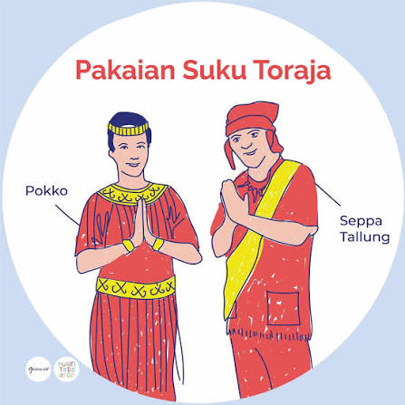
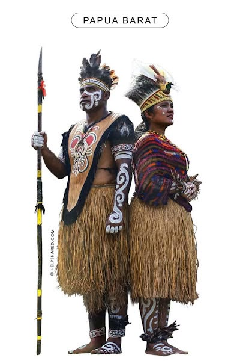

Keanekaragaman Budaya Indonesia
Indonesia adalah negara yang kaya akan keanekaragaman budaya. Dengan lebih dari 17.000 pulau, setiap daerah memiliki tradisi, adat, dan keunikan budayanya sendiri. Keanekaragaman ini mencerminkan sejarah panjang dan interaksi antarbudaya yang kompleks.
Karena di sanalah terletak akar dari jati diri, masa depan bangsa, serta cara berpikir manusia dalam memahami alam dan sesama.
Rumah Adat
| Rumah Adat | Provinsi | Informasi |
|---|---|---|
| Rumah Tongkonan | Sulawesi Selatan | Rumah adat suku Toraja beratap melengkung menyerupai perahu, digunakan sebagai pusat kehidupan sosial dan upacara adat. |
| Rumah Gadang | Sumatera Barat | Rumah adat Minangkabau dengan atap bergonjong khas menyerupai tanduk kerbau. |
| Rumah Joglo | Jawa Tengah & Jawa Timur | Memiliki struktur atap tinggi bertingkat dengan empat tiang utama (soko guru) di bagian tengahnya. |
| Rumah Bolon | Sumatera Utara | Rumah panggung besar berbahan kayu tanpa paku dengan ukiran khas Batak (gorga). |
| Rumah Kebaya | DKI Jakarta | Rumah adat Betawi dengan atap melipat seperti kain kebaya dan teras luas (bale) untuk menyambut tamu. |
| Rumah Limas | Sumatera Selatan | Rumah panggung kayu beratap bertingkat yang mencerminkan hierarki sosial pemiliknya (bengkilas). |
| Rumah Dulohupa | Gorontalo | Rumah adat panggung berbahan kayu yang berfungsi sebagai balai musyawarah dan penyelesaian perkara adat. |
| Rumah Lamin | Kalimantan Timur | Rumah panggung megah berukuran sangat panjang khas suku Dayak Kenyah yang dihuni banyak keluarga. |
| Rumah Baileo | Maluku | Bangunan terbuka tanpa dinding yang digunakan sebagai balai pertemuan adat dan tempat benda sakral. |
| Rumah Sasadu | Maluku Utara | Rumah adat suku Sahu tanpa dinding dan tanpa pintu yang melambangkan keterbukaan serta kerukunan. |
Pakaian Adat
-
Ulee Balang

Pakaian tradisional khas Aceh yang melambangkan keagungan, dipengaruhi nilai Islam dan ketegasan adat.
-
Kebaya

Pakaian atasan tradisional wanita khas Jawa dan Sunda yang dipadukan dengan kain batik.
-
Baju Bodo

Pakaian tradisional wanita suku Bugis dan Makassar berpotongan segi empat dan berbahan kain tipis woven.
-
Ulos

Kain tenun khas masyarakat Batak, Sumatera Utara yang disampirkan dalam berbagai upacara adat.
-
Baju Cele

Pakaian adat Maluku bergaris-garis kotak merah dan putih, biasa dikombinasikan dengan sarung tenun.
-
King Baba dan King Bibinge

Pakaian adat khas suku Dayak Kalimantan Barat yang terbuat dari serat kulit kayu kapuo.
-
Payas Agung

Pakaian tradisional Bali yang sangat megah, biasanya digunakan saat upacara pernikahan adat.
-
Aisan Gede

Pakaian adat Palembang yang melambangkan keagungan dan kejayaan kerajaan Sriwijaya.
-
Baju Pokko dan Seppa Tallung

Pakaian adat suku Toraja, Sulawesi Selatan dengan corak warna cerah dan hiasan manik-manik khas.
-
Pakaian Adat Ewer

Pakaian tradisional khas Papua Barat yang terbuat dari bahan alami seperti serat tumbuhan dan dedaunan.
Tarian Tradisional
- Tari Saman (Aceh)
- Tari Piring (Sumatera Barat)
- Tari Topeng (Jawa Tengah)
- Tari Kecak (Bali)
- Tari Jaipong (Jawa Barat)
- Tari Poco-Poco (Sulawesi Utara)
- Tari Reog Ponorogo (Jawa Timur)
- Tari Cenderawasih (Papua)
- Tari Kipas Pakarena (Sulawesi Selatan)
- Tari Zapin (Riau)
Tari Topeng: Salah satu varian terkenalnya di wilayah lereng Merapi-Merbabu Jawa Tengah adalah Topeng Ireng (Dayakan). Tarian ini bermula pada masa kolonial sebagai transformasi dari seni bela diri dan ketangkasan prajurit rakyat yang disamarkan agar tidak dilarang penjajah. Maknanya melambangkan perjuangan, kekuatan, dan keteguhan iman, di mana tarian ini kemudian disisipi syair-syair selawat sebagai sarana dakwah Islam.
Alat Musik Tradisional
| Nama Alat Musik | Daerah | Cara Memainkan |
|---|---|---|
| Gendang | Sumatera Utara | Dimainkan dengan memukul permukaan kulitnya menggunakan tangan atau alat pemukul. |
| Angklung | Jawa Barat | Dimainkan dengan cara digoyangkan sehingga menghasilkan bunyi dari benturan pipa bambu. |
| Sasando | Nusa Tenggara Timur | Dimainkan dengan cara dipetik senarnya menggunakan jari tangan. |
| Gamelan | Jawa Tengah | Dimainkan dengan cara dipukul menggunakan alat pemukul khusus (tabuh). |
| Kolintang | Sulawesi Utara | Dimainkan dengan cara dipukul bilah-bilah kayunya menggunakan stik kayu khusus. |
| Totobuang | Maluku | Dimainkan dengan cara dipukul menggunakan stik kayu pada bilah-bilah logamnya. |
| Tifa | Papua & Maluku | Dimainkan dengan cara dipukul permukaannya menggunakan telapak tangan. |
| Sape | Kalimantan Timur | Dimainkan dengan cara dipetik senarnya seperti gitar. |
| Saluang | Sumatera Barat | Dimainkan dengan cara ditiup pada bagian lubang bambunya. |
| Kecapi | Jawa Barat | Dimainkan dengan cara dipetik dawainya untuk mengiringi musik Sunda. |
Bahasa Daerah
- Bahasa Jawa
- Bahasa Sunda
- Bahasa Batak
- Bahasa Minangkabau
- Bahasa Bugis
- Bahasa Bali
- Bahasa Banjar
- Bahasa Aceh
- Bahasa Dayak
- Bahasa Papua (Tobati / Dani)
Budaya yang Ingin Kami Pelajari
Budaya yang sangat ingin kami pelajari lebih dalam adalah kebudayaan seni pertunjukan wayang kulit beserta musik gamelan penunjangnya dari Jawa Barat dan Jawa Tengah.
Alasan kami memilih budaya tersebut karena seni wayang mengandung nilai-nilai filosofi kehidupan yang sangat tinggi, cerita moral yang mendalam, serta memadukan berbagai unsur seni secara harmonis mulai dari seni rupa, sastra, hingga seni musik tradisional.